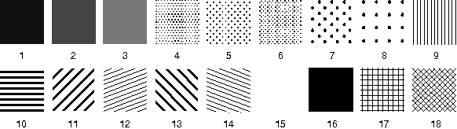

The current pattern symbol, also called the symbol point code, is selected from the current pattern set with GpiSetPattern. The pattern symbol selected for the specified presentation space is used as the subsequent fill pattern until a new symbol is selected. Applications must not call GpiSetPattern while in an area or a path. If the current pattern set specifies a bit map, this attribute is ignored.
The following table describes the pattern symbols provided by the PM programming interface in a base pattern set. These symbols are not necessarily available from other pattern sets.
The Base Pattern Set
┌──────────────────────────────────────────┬─────────────────┬──────────┐ │Symbol │Identifier │Long Value│ ├──────────────────────────────────────────┼─────────────────┼──────────┤ │Solid shading decreasing in dots per inch │PATSYM_DENSE1 │1L - 8L │ │ │through │ │ │ │PATSYM_DENSE8 │ │ ├──────────────────────────────────────────┼─────────────────┼──────────┤ │Vertical lines │PATSYM_VERT │9L │ ├──────────────────────────────────────────┼─────────────────┼──────────┤ │Horizontal lines │PATSYM_HORIZ │10L │ ├──────────────────────────────────────────┼─────────────────┼──────────┤ │Lines bottom left to top right │PATSYM_DIAG1 │11L │ ├──────────────────────────────────────────┼─────────────────┼──────────┤ │Lines bottom left to middle right │PATSYM_DIAG2 │12L │ ├──────────────────────────────────────────┼─────────────────┼──────────┤ │Lines top left to bottom right │PATSYM_DIAG3 │13L │ ├──────────────────────────────────────────┼─────────────────┼──────────┤ │Lines top left to middle right │PATSYM_DIAG4 │14L │ ├──────────────────────────────────────────┼─────────────────┼──────────┤ │No shading │PATSYM_NOSHADE │15L │ ├──────────────────────────────────────────┼─────────────────┼──────────┤ │Solid shading │PATSYM_SOLID │16L │ ├──────────────────────────────────────────┼─────────────────┼──────────┤ │Alternate pels │PATSYM_HALFTONE │17L │ ├──────────────────────────────────────────┼─────────────────┼──────────┤ │Cartesian grid │PATSYM_HATCH │18L │ ├──────────────────────────────────────────┼─────────────────┼──────────┤ │Diagonal crosshatch │PATSYM_DIAGHATCH │19L │ ├──────────────────────────────────────────┼─────────────────┼──────────┤ │Blank (often called the clear pattern) │PATSYM_BLANK │64L │ └──────────────────────────────────────────┴─────────────────┴──────────┘
The default pattern symbol (PATSYM_DEFAULT) is identical to the PATSYM_SOLID symbol, and has a long value of 0L. The error pattern symbol (PATSYM_ERROR) has a long value of -1L.
The following figure shows the patterns from the base pattern symbol set. Applications can determine the current pattern set by calling GpiQueryPattern. 
The Base Pattern Symbol Set